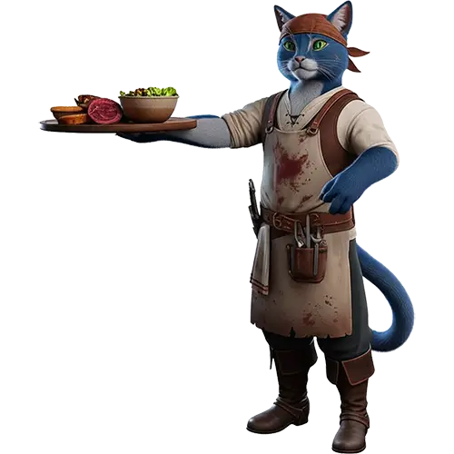

Довгих днів, та приємних ночей, подорожній!
Якщо ти не знаєш, з чого почати — то ти вже там, де треба. Бо тут зібрано все, чим живе наша таверна. Перед тобою основні категорії Синього Кота, перевірені на сковорідці, черпаках, гостях і навіть одній вередливій ельфійці.
Тут ти знайдеш: і соковиті гарячі м’ясні страви, і легкі овочеві салати, і старі добрі закуски з оселедцем, і каші, які навіть гном не відмовиться з’їсти без пива. Тут і теплий борщ з пампушками, і холодна паста з буряка з сиром, і печене м’ясо, і намазки, і пироги, і навіть поради, що з чим запити.
Ці рецепти я збирав роками: в тавернах на роздоріжжях, у бабусь у передмісті Дрімучого Лісу, в трактирі “Схибленого Козака” і навіть на ринку в Печерській Брамі. І тепер вони всі тут, для тебе.
Тож не вагайся. Пролистай, обери, готуй. А якщо буде добре — розкажи друзям і налий кухоль на моє здоров’я.
Бо кожна страва — це не просто їжа. Це історія, яка пахне дровами, зеленню, та краплями горілки. І ти можеш стати її частиною — просто візьми й приготуй.
